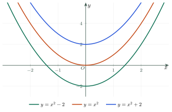

AntiderivativesNguyên hàm
Grade 12 · Topic: Antiderivatives and IntegralsLớp 12 · Chủ đề: Nguyên hàm và tích phân
1Lesson IntroductionGiới thiệu bài học
Learning goalsMục tiêu bài học
By the end of this lesson you can:
Sau bài học này, em có thể:
explain what an antiderivative is and write \(\int f(x)\,dx=F(x)+C\);
hiểu khái niệm nguyên hàm và viết họ nguyên hàm \(\int f(x)\,dx=F(x)+C\);
use the two properties and the table of basic antiderivatives;
dùng hai tính chất và bảng nguyên hàm cơ bản;
find the antiderivative that satisfies an initial condition;
tìm nguyên hàm thỏa mãn điều kiện ban đầu;
solve motion and cost problems with antiderivatives.
giải bài toán chuyển động, chi phí bằng nguyên hàm.
2Mathematical VocabularyTừ vựng Toán học
antiderivative (primitive) – a function \(F\) with \(F'(x)=f(x)\) for every \(x\) in \(K\).
nguyên hàm – hàm số \(F\) thỏa mãn \(F'(x)=f(x)\) với mọi \(x\) thuộc \(K\).
indefinite integral – the set of all antiderivatives \(F(x)+C\), written \(\int f(x)\,dx\).
họ nguyên hàm – tập hợp mọi nguyên hàm \(F(x)+C\), kí hiệu \(\int f(x)\,dx\).
constant of integration – the arbitrary constant \(C\) in \(F(x)+C\).
hằng số tùy ý \(C\) – hằng số \(C\) bất kì trong \(F(x)+C\).
integrand – the function \(f(x)\) in \(\int f(x)\,dx\).
hàm số dưới dấu nguyên hàm – hàm số \(f(x)\) trong \(\int f(x)\,dx\).
initial condition – a given value such as \(F(0)=2\) that fixes \(C\).
điều kiện ban đầu – giá trị cho trước, ví dụ \(F(0)=2\), dùng để tìm \(C\).
velocity – the derivative of the position: \(v(t)=s'(t)\); so \(s(t)\) is an antiderivative of \(v(t)\).
vận tốc – đạo hàm của tọa độ (quãng đường): \(v(t)=s'(t)\); do đó \(s(t)\) là một nguyên hàm của \(v(t)\).
3Useful English PhrasesCụm từ tiếng Anh thường gặp
Find the antiderivative of the function.
Tìm nguyên hàm của hàm số.
Check that \(F'(x)=f(x)\).
Kiểm tra \(F'(x)=f(x)\).
Find \(F(x)\) such that \(F(0)=2\).
Tìm \(F(x)\) sao cho \(F(0)=2\).
Do not forget the constant \(C\).
Đừng quên hằng số \(C\).
Find the position of the object at time \(t\).
Tìm vị trí của vật tại thời điểm \(t\).
4Prerequisite ReviewÔn tập kiến thức nền
From Grade 11: \((x^n)'=nx^{n-1}\), \((\ln x)'=\dfrac1x\), \((e^x)'=e^x\), \((a^x)'=a^x\ln a\), \((\sin x)'=\cos x\), \((\cos x)'=-\sin x\), \((\tan x)'=\dfrac1{\cos^2x}\), \((\cot x)'=-\dfrac1{\sin^2x}\). Today we go backwards: from the derivative to the function.
Từ lớp 11: \((x^n)'=nx^{n-1}\), \((\ln x)'=\dfrac1x\), \((e^x)'=e^x\), \((a^x)'=a^x\ln a\), \((\sin x)'=\cos x\), \((\cos x)'=-\sin x\), \((\tan x)'=\dfrac1{\cos^2x}\), \((\cot x)'=-\dfrac1{\sin^2x}\). Hôm nay ta làm ngược lại: từ đạo hàm tìm hàm số.
5TheoryLý thuyết
5.1 The idea of an antiderivativeKhái niệm nguyên hàm
DefinitionĐịnh nghĩa
Let \(f\) be defined on an interval \(K\). A function \(F\) is an antiderivative of \(f\) on \(K\) if \(F'(x)=f(x)\) for all \(x\in K\).
Cho hàm số \(f\) xác định trên khoảng (đoạn, nửa khoảng) \(K\). Hàm số \(F\) là một nguyên hàm của \(f\) trên \(K\) nếu \(F'(x)=f(x)\) với mọi \(x\in K\).
TheoremĐịnh lí
If \(F\) is an antiderivative of \(f\) on \(K\), then all antiderivatives are \(F(x)+C\) (\(C\) a constant). We write \(\displaystyle\int f(x)\,dx=F(x)+C\).
Nếu \(F\) là một nguyên hàm của \(f\) trên \(K\) thì mọi nguyên hàm của \(f\) có dạng \(F(x)+C\) (\(C\) là hằng số). Kí hiệu \(\displaystyle\int f(x)\,dx=F(x)+C\).
Every function continuous on \(K\) has an antiderivative on \(K\). Also \(\displaystyle\int f'(x)\,dx=f(x)+C\).
Mọi hàm số liên tục trên \(K\) đều có nguyên hàm trên \(K\). Ngoài ra \(\displaystyle\int f'(x)\,dx=f(x)+C\).

5.2 PropertiesTính chất của nguyên hàm
For continuous \(f\), \(g\) on \(K\)Với \(f\), \(g\) liên tục trên \(K\)
5.3 Table of basic antiderivativesNguyên hàm của một số hàm số sơ cấp
| Function \(f(x)\)Hàm số \(f(x)\) | \(\int f(x)\,dx\) |
|---|---|
| \(x^\alpha\ (\alpha\ne-1)\) | \(\dfrac{x^{\alpha+1}}{\alpha+1}+C\) |
| \(\dfrac1x\) | \(\ln|x|+C\) |
| \(\sin x\) | \(-\cos x+C\) |
| \(\cos x\) | \(\sin x+C\) |
| \(\dfrac1{\cos^2x}\) | \(\tan x+C\) |
| \(\dfrac1{\sin^2x}\) | \(-\cot x+C\) |
| \(e^x\) | \(e^x+C\) |
| \(a^x\ (0\lt a\ne1)\) | \(\dfrac{a^x}{\ln a}+C\) |
Watch out!Lưu ý
Always add \(+C\). Check your answer by differentiating. There is no rule "\(\int f\cdot g=\int f\cdot\int g\)": rewrite the product as a sum first. \(\int\dfrac1x\,dx=\ln|x|+C\) (absolute value!).
Luôn viết \(+C\). Kiểm tra kết quả bằng cách lấy đạo hàm. Không có quy tắc "\(\int f\cdot g=\int f\cdot\int g\)": phải biến đổi tích thành tổng trước. \(\int\dfrac1x\,dx=\ln|x|+C\) (có dấu giá trị tuyệt đối!).
6Worked ExamplesVí dụ có lời giải
ExampleVí dụ 1BasicCơ bản – A polynomialHàm đa thức
Find \(\displaystyle\int(3x^2-4x+5)\,dx\).
Tìm \(\displaystyle\int(3x^2-4x+5)\,dx\).
Analysis: Split into terms; use \(\int x^\alpha dx=\dfrac{x^{\alpha+1}}{\alpha+1}+C\).
Phân tích: Tách thành từng hạng tử; dùng \(\int x^\alpha dx=\dfrac{x^{\alpha+1}}{\alpha+1}+C\).
\(3\int x^2dx-4\int x\,dx+5\int dx=3\cdot\dfrac{x^3}3-4\cdot\dfrac{x^2}2+5x+C\).
\(3\int x^2dx-4\int x\,dx+5\int dx=3\cdot\dfrac{x^3}3-4\cdot\dfrac{x^2}2+5x+C\).
Check: \((x^3-2x^2+5x)'=3x^2-4x+5\).
Thử lại: \((x^3-2x^2+5x)'=3x^2-4x+5\).
\(x^3-2x^2+5x+C\).
\(x^3-2x^2+5x+C\).
ExampleVí dụ 2BasicCơ bản – Trigonometric, logarithmic and exponentialLượng giác, lôgarit, mũ
On \((0;+\infty)\), find \(\displaystyle\int\left(2\sin x+\dfrac3x\right)dx\) and \(\displaystyle\int(e^x-2^x)\,dx\).
Trên \((0;+\infty)\), tìm \(\displaystyle\int\left(2\sin x+\dfrac3x\right)dx\) và \(\displaystyle\int(e^x-2^x)\,dx\).
Analysis: Use the table row by row.
Phân tích: Dùng bảng nguyên hàm từng dòng.
\(2(-\cos x)+3\ln|x|+C=-2\cos x+3\ln x+C\) (\(x\gt0\)).
\(2(-\cos x)+3\ln|x|+C=-2\cos x+3\ln x+C\) (vì \(x\gt0\)).
\(\int e^xdx-\int2^xdx=e^x-\dfrac{2^x}{\ln2}+C\).
\(\int e^xdx-\int2^xdx=e^x-\dfrac{2^x}{\ln2}+C\).
\(-2\cos x+3\ln x+C\); \(e^x-\dfrac{2^x}{\ln2}+C\).
\(-2\cos x+3\ln x+C\); \(e^x-\dfrac{2^x}{\ln2}+C\).
ExampleVí dụ 3IntermediateTrung bình – Rewrite firstBiến đổi trước khi tìm
Find (a) \(\displaystyle\int\dfrac{x^2+1}{x}\,dx\) on \((0;+\infty)\); (b) \(\displaystyle\int\tan^2x\,dx\) on \(\left(-\dfrac\pi2;\dfrac\pi2\right)\).
Tìm (a) \(\displaystyle\int\dfrac{x^2+1}{x}\,dx\) trên \((0;+\infty)\); (b) \(\displaystyle\int\tan^2x\,dx\) trên \(\left(-\dfrac\pi2;\dfrac\pi2\right)\).
Analysis: Turn a quotient into a sum; use \(\tan^2x=\dfrac1{\cos^2x}-1\).
Phân tích: Biến thương thành tổng; dùng \(\tan^2x=\dfrac1{\cos^2x}-1\).
(a) \(\dfrac{x^2+1}x=x+\dfrac1x\), so the answer is \(\dfrac{x^2}2+\ln x+C\).
(a) \(\dfrac{x^2+1}x=x+\dfrac1x\) nên kết quả là \(\dfrac{x^2}2+\ln x+C\).
(b) \(\int\left(\dfrac1{\cos^2x}-1\right)dx=\tan x-x+C\).
(b) \(\int\left(\dfrac1{\cos^2x}-1\right)dx=\tan x-x+C\).
(a) \(\dfrac{x^2}2+\ln x+C\); (b) \(\tan x-x+C\).
(a) \(\dfrac{x^2}2+\ln x+C\); (b) \(\tan x-x+C\).
ExampleVí dụ 4IntermediateTrung bình – An initial conditionĐiều kiện ban đầu
Find the antiderivative \(F\) of \(f(x)=4x^3-2x+1\) with \(F(1)=3\).
Tìm nguyên hàm \(F\) của \(f(x)=4x^3-2x+1\) thỏa mãn \(F(1)=3\).
Analysis: Find the family, then use \(F(1)=3\) to get \(C\).
Phân tích: Tìm họ nguyên hàm, rồi dùng \(F(1)=3\) để tìm \(C\).
\(F(x)=x^4-x^2+x+C\).
\(F(x)=x^4-x^2+x+C\).
\(F(1)=1-1+1+C=1+C=3\Rightarrow C=2\).
\(F(1)=1-1+1+C=1+C=3\Rightarrow C=2\).
\(F(x)=x^4-x^2+x+2\).
\(F(x)=x^4-x^2+x+2\).
ExampleVí dụ 5AdvancedNâng cao – A ball thrown upwardQuả bóng ném lên
A ball is thrown straight up from a height of 1.5 m. Its velocity is \(v(t)=20-9.8t\) (m/s). Find its height \(h(t)\), its height after 2 s, and the time it reaches the top.
Một quả bóng được ném thẳng đứng lên từ độ cao 1,5 m, vận tốc \(v(t)=20-9{,}8t\) (m/s). Tìm độ cao \(h(t)\), độ cao sau 2 giây và thời điểm bóng lên cao nhất.
Analysis: \(h(t)\) is the antiderivative of \(v(t)\) with \(h(0)=1.5\).
Phân tích: \(h(t)\) là nguyên hàm của \(v(t)\) thỏa mãn \(h(0)=1{,}5\).
\(h(t)=20t-4.9t^2+C\), \(h(0)=C=1.5\).
\(h(t)=20t-4{,}9t^2+C\), \(h(0)=C=1{,}5\).
\(h(2)=40-19.6+1.5=21.9\) m.
\(h(2)=40-19{,}6+1{,}5=21{,}9\) m.
Top when \(v(t)=0\): \(t=\dfrac{20}{9.8}\approx2.04\) s.
Lên cao nhất khi \(v(t)=0\): \(t=\dfrac{20}{9{,}8}\approx2{,}04\) s.
\(h(t)=-4.9t^2+20t+1.5\); \(h(2)=21.9\) m; top at \(t\approx2.04\) s.
\(h(t)=-4{,}9t^2+20t+1{,}5\); \(h(2)=21{,}9\) m; lên cao nhất tại \(t\approx2{,}04\) s.
7PracticeBài tập luyện tập
A. Multiple ChoiceA. Trắc nghiệm nhiều lựa chọn
\(\displaystyle\int(6x^{2}-2x+3)\,dx=\)…
\(\displaystyle\int(6x^{2}-2x+3)\,dx=\)…
Answer: a. Term by term: \(2x^{3}-x^{2}+3x+C\). Check by differentiating.
Đáp án a. Lấy nguyên hàm từng hạng tử: \(2x^{3}-x^{2}+3x+C\). Thử lại bằng đạo hàm.
\(\displaystyle\int(3\cos x-\sin x)\,dx=\)…
\(\displaystyle\int(3\cos x-\sin x)\,dx=\)…
Answer: c. \(\int\cos x\,dx=\sin x+C\), \(\int\sin x\,dx=-\cos x+C\).
Đáp án c. \(\int\cos x\,dx=\sin x+C\), \(\int\sin x\,dx=-\cos x+C\).
\(F\) is an antiderivative of \(f(x)=2x+1\) with \(F(0)=3\). Then \(F(2)=\)…
\(F\) là một nguyên hàm của \(f(x)=2x+1\) và \(F(0)=3\). Khi đó \(F(2)=\)…
Answer: c. \(F(x)=x^{2}+x+C\), \(C=3\), \(F(2)=9\).
Đáp án c. \(F(x)=x^{2}+x+C\), \(C=3\), \(F(2)=9\).
B. True or FalseB. Đúng hoặc sai
\(F(x)=x^{3}-x^{2}+7\) is an antiderivative of \(f(x)=3x^{2}-2x\).
\(F(x)=x^{3}-x^{2}+7\) là một nguyên hàm của \(f(x)=3x^{2}-2x\).
\(F'(x)=3x^{2}-2x\).
\(F'(x)=3x^{2}-2x\).
\(\displaystyle\int\dfrac1x\,dx=\ln|x|+C\) on \((-\infty;0)\).
\(\displaystyle\int\dfrac1x\,dx=\ln|x|+C\) trên \((-\infty;0)\).
Check by differentiating: \((\ln|x|)'=\dfrac1x\) for \(x\ne0\); \(\left(\dfrac{3^x}{\ln3}\right)'=3^x\); there is no product rule for antiderivatives.
Kiểm tra bằng đạo hàm: \((\ln|x|)'=\dfrac1x\) với \(x\ne0\); \(\left(\dfrac{3^x}{\ln3}\right)'=3^x\); không có quy tắc nguyên hàm của tích như vậy.
C. Short AnswerC. Trả lời ngắn
A motorbike has velocity \(v(t)=5+2t\) (m/s) and \(s(0)=0\). How many metres does it travel in the first \(10\) seconds?
Một xe máy có vận tốc \(v(t)=5+2t\) (m/s) và \(s(0)=0\). Trong \(10\) giây đầu xe đi được bao nhiêu mét?
Enter a number.
Nhập một số.
\(s(t)=5t+1t^2\); \(s(10)=150\).
\(s(t)=5t+1t^2\); \(s(10)=150\).
\(F\) is an antiderivative of \(f(x)=3x^{2}-2\) with \(F(1)=4\). Find \(F(2)\).
Cho \(F\) là một nguyên hàm của \(f(x)=3x^{2}-2\) thỏa mãn \(F(1)=4\). Tính \(F(2)\).
Enter a number.
Nhập một số.
\(F(x)=x^{3}-2x+C\), \(C=5\), \(F(2)=9\).
\(F(x)=x^{3}-2x+C\), \(C=5\), \(F(2)=9\).
A. Multiple ChoiceA. Trắc nghiệm nhiều lựa chọn
\(\displaystyle\int(4x^{3}+6x-1)\,dx=\)…
\(\displaystyle\int(4x^{3}+6x-1)\,dx=\)…
Answer: d. Term by term: \(x^{4}+3x^{2}-x+C\). Check by differentiating.
Đáp án d. Lấy nguyên hàm từng hạng tử: \(x^{4}+3x^{2}-x+C\). Thử lại bằng đạo hàm.
On \((0;+\infty)\): \(\displaystyle\int\left(e^x+\dfrac2x\right)dx=\)…
On \((0;+\infty)\): \(\displaystyle\int\left(e^x+\dfrac2x\right)dx=\)…
Answer: c. \(\int e^xdx=e^x+C\), \(\int\dfrac1xdx=\ln|x|+C\).
Đáp án c. \(\int e^xdx=e^x+C\), \(\int\dfrac1xdx=\ln|x|+C\).
\(F\) is an antiderivative of \(f(x)=-4x+3\) with \(F(1)=2\). Then \(F(3)=\)…
\(F\) là một nguyên hàm của \(f(x)=-4x+3\) và \(F(1)=2\). Khi đó \(F(3)=\)…
Answer: d. \(F(x)=-2x^{2}+3x+C\), \(C=1\), \(F(3)=-8\).
Đáp án d. \(F(x)=-2x^{2}+3x+C\), \(C=1\), \(F(3)=-8\).
B. True or FalseB. Đúng hoặc sai
\(F(x)=x^{4}+2x\) is an antiderivative of \(f(x)=4x^{3}+2x\).
\(F(x)=x^{4}+2x\) là một nguyên hàm của \(f(x)=4x^{3}+2x\).
\(F'(x)=4x^{3}+2\).
\(F'(x)=4x^{3}+2\).
\(\displaystyle\int f(x)g(x)\,dx=\int f(x)\,dx\cdot\int g(x)\,dx\) for all continuous \(f\), \(g\).
\(\displaystyle\int f(x)g(x)\,dx=\int f(x)\,dx\cdot\int g(x)\,dx\) với mọi hàm liên tục \(f\), \(g\).
Check by differentiating: \((\ln|x|)'=\dfrac1x\) for \(x\ne0\); \(\left(\dfrac{3^x}{\ln3}\right)'=3^x\); there is no product rule for antiderivatives.
Kiểm tra bằng đạo hàm: \((\ln|x|)'=\dfrac1x\) với \(x\ne0\); \(\left(\dfrac{3^x}{\ln3}\right)'=3^x\); không có quy tắc nguyên hàm của tích như vậy.
C. Short AnswerC. Trả lời ngắn
A motorbike has velocity \(v(t)=10+3t\) (m/s) and \(s(0)=0\). How many metres does it travel in the first \(8\) seconds?
Một xe máy có vận tốc \(v(t)=10+3t\) (m/s) và \(s(0)=0\). Trong \(8\) giây đầu xe đi được bao nhiêu mét?
Enter a number.
Nhập một số.
\(s(t)=10t+1.5t^2\); \(s(8)=176\).
\(s(t)=10t+1{,}5t^2\); \(s(8)=176\).
\(F\) is an antiderivative of \(f(x)=6x+1\) with \(F(0)=-3\). Find \(F(3)\).
Cho \(F\) là một nguyên hàm của \(f(x)=6x+1\) thỏa mãn \(F(0)=-3\). Tính \(F(3)\).
Enter a number.
Nhập một số.
\(F(x)=3x^{2}+x+C\), \(C=-3\), \(F(3)=27\).
\(F(x)=3x^{2}+x+C\), \(C=-3\), \(F(3)=27\).
A. Multiple ChoiceA. Trắc nghiệm nhiều lựa chọn
\(\displaystyle\int(-9x^{2}+4x+2)\,dx=\)…
\(\displaystyle\int(-9x^{2}+4x+2)\,dx=\)…
Answer: c. Term by term: \(-3x^{3}+2x^{2}+2x+C\). Check by differentiating.
Đáp án c. Lấy nguyên hàm từng hạng tử: \(-3x^{3}+2x^{2}+2x+C\). Thử lại bằng đạo hàm.
\(\displaystyle\int\left(\dfrac{1}{\cos^2x}+5^x\right)dx=\)…
\(\displaystyle\int\left(\dfrac{1}{\cos^2x}+5^x\right)dx=\)…
Answer: a. \(\int\dfrac1{\cos^2x}dx=\tan x+C\), \(\int a^xdx=\dfrac{a^x}{\ln a}+C\).
Đáp án a. \(\int\dfrac1{\cos^2x}dx=\tan x+C\), \(\int a^xdx=\dfrac{a^x}{\ln a}+C\).
\(F\) is an antiderivative of \(f(x)=3x^{2}-2x\) with \(F(2)=1\). Then \(F(-1)=\)…
\(F\) là một nguyên hàm của \(f(x)=3x^{2}-2x\) và \(F(2)=1\). Khi đó \(F(-1)=\)…
Answer: d. \(F(x)=x^{3}-x^{2}+C\), \(C=-3\), \(F(-1)=-5\).
Đáp án d. \(F(x)=x^{3}-x^{2}+C\), \(C=-3\), \(F(-1)=-5\).
B. True or FalseB. Đúng hoặc sai
\(F(x)=2x^{3}-5x+1\) is an antiderivative of \(f(x)=6x^{2}-5\).
\(F(x)=2x^{3}-5x+1\) là một nguyên hàm của \(f(x)=6x^{2}-5\).
\(F'(x)=6x^{2}-5\).
\(F'(x)=6x^{2}-5\).
\(\displaystyle\int3^x\,dx=3^x\ln3+C\).
\(\displaystyle\int3^x\,dx=3^x\ln3+C\).
Check by differentiating: \((\ln|x|)'=\dfrac1x\) for \(x\ne0\); \(\left(\dfrac{3^x}{\ln3}\right)'=3^x\); there is no product rule for antiderivatives.
Kiểm tra bằng đạo hàm: \((\ln|x|)'=\dfrac1x\) với \(x\ne0\); \(\left(\dfrac{3^x}{\ln3}\right)'=3^x\); không có quy tắc nguyên hàm của tích như vậy.
C. Short AnswerC. Trả lời ngắn
A motorbike has velocity \(v(t)=12+4t\) (m/s) and \(s(0)=0\). How many metres does it travel in the first \(5\) seconds?
Một xe máy có vận tốc \(v(t)=12+4t\) (m/s) và \(s(0)=0\). Trong \(5\) giây đầu xe đi được bao nhiêu mét?
Enter a number.
Nhập một số.
\(s(t)=12t+2t^2\); \(s(5)=110\).
\(s(t)=12t+2t^2\); \(s(5)=110\).
\(F\) is an antiderivative of \(f(x)=4x^{3}-2x\) with \(F(1)=0\). Find \(F(2)\).
Cho \(F\) là một nguyên hàm của \(f(x)=4x^{3}-2x\) thỏa mãn \(F(1)=0\). Tính \(F(2)\).
Enter a number.
Nhập một số.
\(F(x)=x^{4}-x^{2}+C\), \(C=0\), \(F(2)=12\).
\(F(x)=x^{4}-x^{2}+C\), \(C=0\), \(F(2)=12\).
D. Self-practice: Multiple ChoiceD. Tự luyện: trắc nghiệm
\(\displaystyle\int(x^{2}-4x-1)\,dx=\)…
\(\displaystyle\int(x^{2}-4x-1)\,dx=\)…
Answer: b. \(\int x^\alpha dx=\dfrac{x^{\alpha+1}}{\alpha+1}+C\), term by term.
Đáp án b. \(\int x^\alpha dx=\dfrac{x^{\alpha+1}}{\alpha+1}+C\), lấy từng hạng tử.
On \((0;+\infty)\), \(\displaystyle\int 6x^3\,dx=\)…
Trên \((0;+\infty)\), \(\displaystyle\int 6x^3\,dx=\)…
Answer: b. \(\int x^3dx=\dfrac{x^4}{4}+C\).
Đáp án b. \(\int x^3dx=\dfrac{x^4}{4}+C\).
\(\displaystyle\int(3\sin x-3\cos x)\,dx=\)…
\(\displaystyle\int(3\sin x-3\cos x)\,dx=\)…
Answer: a. \(\int\sin x\,dx=-\cos x+C\), \(\int\cos x\,dx=\sin x+C\).
Đáp án a. \(\int\sin x\,dx=-\cos x+C\), \(\int\cos x\,dx=\sin x+C\).
\(\displaystyle\int(2e^x+2^x)\,dx=\)…
\(\displaystyle\int(2e^x+2^x)\,dx=\)…
Answer: c. \(\int e^xdx=e^x+C\), \(\int a^xdx=\dfrac{a^x}{\ln a}+C\).
Đáp án c. \(\int e^xdx=e^x+C\), \(\int a^xdx=\dfrac{a^x}{\ln a}+C\).
\(F(x)\) is an antiderivative of \(f(x)=-2x+5\) with \(F(0)=4\). Then \(F(3)=\)…
Biết \(F(x)\) là một nguyên hàm của \(f(x)=-2x+5\) và \(F(0)=4\). Khi đó \(F(3)=\)…
Answer: a. \(F(x)=-x^{2}+5x+C\), \(F(0)=4\Rightarrow C=4\); \(F(3)=10\).
Đáp án a. \(F(x)=-x^{2}+5x+C\), \(F(0)=4\Rightarrow C=4\); \(F(3)=10\).
Which function is an antiderivative of \(f(x)=6x^{2}-2\)?
Hàm số nào là một nguyên hàm của \(f(x)=6x^{2}-2\)?
Answer: a. Check \(F'(x)=f(x)\): \((2x^{3}-2x+4)'=6x^{2}-2\).
Đáp án a. Kiểm tra \(F'(x)=f(x)\): \((2x^{3}-2x+4)'=6x^{2}-2\).
A car starts with velocity \(0\ \text{m/s}\) and accelerates with \(a=3\ \text{m/s}^2\). How far does it travel in the first \(8\) s?
Một ô tô có vận tốc ban đầu \(0\ \text{m/s}\), tăng tốc với gia tốc \(a=3\ \text{m/s}^2\). Quãng đường đi được trong \(8\) giây đầu là…
Answer: a. \(v(t)=0+3t\), \(s(t)=\int v\,dt=0t+\dfrac{3}{2}t^2\) (\(s(0)=0\)); \(s(8)=96\).
Đáp án a. \(v(t)=0+3t\), \(s(t)=\int v\,dt=0t+\dfrac{3}{2}t^2\) (\(s(0)=0\)); \(s(8)=96\).
The marginal cost of a workshop is \(C'(x)=20+0.1x\) (thousand VND per product) and the fixed cost is \(C(0)=200\) thousand VND. The cost of making \(10\) products is…
Chi phí biên của một xưởng là \(C'(x)=20+0{,}1x\) (nghìn đồng/sản phẩm), chi phí cố định \(C(0)=200\) nghìn đồng. Chi phí sản xuất \(10\) sản phẩm là…
Answer: a. \(C(x)=200+20x+0.05x^2\); \(C(10)=405\).
Đáp án a. \(C(x)=200+20x+0{,}05x^2\); \(C(10)=405\).
D. Self-practice: Multiple ChoiceD. Tự luyện: trắc nghiệm
\(\displaystyle\int(9x^{2}+6x+7)\,dx=\)…
\(\displaystyle\int(9x^{2}+6x+7)\,dx=\)…
Answer: c. \(\int x^\alpha dx=\dfrac{x^{\alpha+1}}{\alpha+1}+C\), term by term.
Đáp án c. \(\int x^\alpha dx=\dfrac{x^{\alpha+1}}{\alpha+1}+C\), lấy từng hạng tử.
On \((0;+\infty)\), \(\displaystyle\int \dfrac{4}{x^2}\,dx=\)…
Trên \((0;+\infty)\), \(\displaystyle\int \dfrac{4}{x^2}\,dx=\)…
Answer: b. \(\int x^{-2}dx=\dfrac{x^{-1}}{-1}+C=-\dfrac1x+C\).
Đáp án b. \(\int x^{-2}dx=\dfrac{x^{-1}}{-1}+C=-\dfrac1x+C\).
\(\displaystyle\int(3\sin x+2\cos x)\,dx=\)…
\(\displaystyle\int(3\sin x+2\cos x)\,dx=\)…
Answer: b. \(\int\sin x\,dx=-\cos x+C\), \(\int\cos x\,dx=\sin x+C\).
Đáp án b. \(\int\sin x\,dx=-\cos x+C\), \(\int\cos x\,dx=\sin x+C\).
\(\displaystyle\int(2e^x+10^x)\,dx=\)…
\(\displaystyle\int(2e^x+10^x)\,dx=\)…
Answer: c. \(\int e^xdx=e^x+C\), \(\int a^xdx=\dfrac{a^x}{\ln a}+C\).
Đáp án c. \(\int e^xdx=e^x+C\), \(\int a^xdx=\dfrac{a^x}{\ln a}+C\).
\(F(x)\) is an antiderivative of \(f(x)=-2x+1\) with \(F(0)=1\). Then \(F(3)=\)…
Biết \(F(x)\) là một nguyên hàm của \(f(x)=-2x+1\) và \(F(0)=1\). Khi đó \(F(3)=\)…
Answer: a. \(F(x)=-x^{2}+x+C\), \(F(0)=1\Rightarrow C=1\); \(F(3)=-5\).
Đáp án a. \(F(x)=-x^{2}+x+C\), \(F(0)=1\Rightarrow C=1\); \(F(3)=-5\).
Which function is an antiderivative of \(f(x)=3x^{2}-2\)?
Hàm số nào là một nguyên hàm của \(f(x)=3x^{2}-2\)?
Answer: d. Check \(F'(x)=f(x)\): \((x^{3}-2x+1)'=3x^{2}-2\).
Đáp án d. Kiểm tra \(F'(x)=f(x)\): \((x^{3}-2x+1)'=3x^{2}-2\).
A car starts with velocity \(0\ \text{m/s}\) and accelerates with \(a=4\ \text{m/s}^2\). How far does it travel in the first \(6\) s?
Một ô tô có vận tốc ban đầu \(0\ \text{m/s}\), tăng tốc với gia tốc \(a=4\ \text{m/s}^2\). Quãng đường đi được trong \(6\) giây đầu là…
Answer: c. \(v(t)=0+4t\), \(s(t)=\int v\,dt=0t+\dfrac{4}{2}t^2\) (\(s(0)=0\)); \(s(6)=72\).
Đáp án c. \(v(t)=0+4t\), \(s(t)=\int v\,dt=0t+\dfrac{4}{2}t^2\) (\(s(0)=0\)); \(s(6)=72\).
The marginal cost of a workshop is \(C'(x)=5+0.4x\) (thousand VND per product) and the fixed cost is \(C(0)=100\) thousand VND. The cost of making \(10\) products is…
Chi phí biên của một xưởng là \(C'(x)=5+0{,}4x\) (nghìn đồng/sản phẩm), chi phí cố định \(C(0)=100\) nghìn đồng. Chi phí sản xuất \(10\) sản phẩm là…
Answer: b. \(C(x)=100+5x+0.2x^2\); \(C(10)=170\).
Đáp án b. \(C(x)=100+5x+0{,}2x^2\); \(C(10)=170\).
D. Self-practice: Multiple ChoiceD. Tự luyện: trắc nghiệm
\(\displaystyle\int(3x^{2}-4x-5)\,dx=\)…
\(\displaystyle\int(3x^{2}-4x-5)\,dx=\)…
Answer: d. \(\int x^\alpha dx=\dfrac{x^{\alpha+1}}{\alpha+1}+C\), term by term.
Đáp án d. \(\int x^\alpha dx=\dfrac{x^{\alpha+1}}{\alpha+1}+C\), lấy từng hạng tử.
On \((0;+\infty)\), \(\displaystyle\int 2\sqrt{x}\,dx=\)…
Trên \((0;+\infty)\), \(\displaystyle\int 2\sqrt{x}\,dx=\)…
Answer: b. \(\int x^{\frac12}dx=\dfrac{x^{\frac32}}{\frac32}+C=\dfrac23x\sqrt x+C\).
Đáp án b. \(\int x^{\frac12}dx=\dfrac{x^{\frac32}}{\frac32}+C=\dfrac23x\sqrt x+C\).
\(\displaystyle\int(3\sin x+\cos x)\,dx=\)…
\(\displaystyle\int(3\sin x+\cos x)\,dx=\)…
Answer: d. \(\int\sin x\,dx=-\cos x+C\), \(\int\cos x\,dx=\sin x+C\).
Đáp án d. \(\int\sin x\,dx=-\cos x+C\), \(\int\cos x\,dx=\sin x+C\).
\(\displaystyle\int(2e^x+3^x)\,dx=\)…
\(\displaystyle\int(2e^x+3^x)\,dx=\)…
Answer: c. \(\int e^xdx=e^x+C\), \(\int a^xdx=\dfrac{a^x}{\ln a}+C\).
Đáp án c. \(\int e^xdx=e^x+C\), \(\int a^xdx=\dfrac{a^x}{\ln a}+C\).
\(F(x)\) is an antiderivative of \(f(x)=6x+1\) with \(F(0)=0\). Then \(F(3)=\)…
Biết \(F(x)\) là một nguyên hàm của \(f(x)=6x+1\) và \(F(0)=0\). Khi đó \(F(3)=\)…
Answer: c. \(F(x)=3x^{2}+x+C\), \(F(0)=0\Rightarrow C=0\); \(F(3)=30\).
Đáp án c. \(F(x)=3x^{2}+x+C\), \(F(0)=0\Rightarrow C=0\); \(F(3)=30\).
Which function is an antiderivative of \(f(x)=-3x^{2}+3\)?
Hàm số nào là một nguyên hàm của \(f(x)=-3x^{2}+3\)?
Answer: a. Check \(F'(x)=f(x)\): \((-x^{3}+3x+4)'=-3x^{2}+3\).
Đáp án a. Kiểm tra \(F'(x)=f(x)\): \((-x^{3}+3x+4)'=-3x^{2}+3\).
A car starts with velocity \(2\ \text{m/s}\) and accelerates with \(a=1.5\ \text{m/s}^2\). How far does it travel in the first \(4\) s?
Một ô tô có vận tốc ban đầu \(2\ \text{m/s}\), tăng tốc với gia tốc \(a=1{,}5\ \text{m/s}^2\). Quãng đường đi được trong \(4\) giây đầu là…
Answer: b. \(v(t)=2+1.5t\), \(s(t)=\int v\,dt=2t+\dfrac{1.5}{2}t^2\) (\(s(0)=0\)); \(s(4)=20\).
Đáp án b. \(v(t)=2+1{,}5t\), \(s(t)=\int v\,dt=2t+\dfrac{1{,}5}{2}t^2\) (\(s(0)=0\)); \(s(4)=20\).
The marginal cost of a workshop is \(C'(x)=5+0.4x\) (thousand VND per product) and the fixed cost is \(C(0)=100\) thousand VND. The cost of making \(50\) products is…
Chi phí biên của một xưởng là \(C'(x)=5+0{,}4x\) (nghìn đồng/sản phẩm), chi phí cố định \(C(0)=100\) nghìn đồng. Chi phí sản xuất \(50\) sản phẩm là…
Answer: c. \(C(x)=100+5x+0.2x^2\); \(C(50)=850\).
Đáp án c. \(C(x)=100+5x+0{,}2x^2\); \(C(50)=850\).
8Common MistakesLỗi thường gặp
Forgetting \(+C\). \(\int f(x)\,dx\) is a family of functions.
Quên \(+C\). \(\int f(x)\,dx\) là một họ hàm số.
Differentiating instead of integrating. \(\int x^3dx=\dfrac{x^4}4+C\), not \(3x^2\).
Lấy đạo hàm thay vì nguyên hàm. \(\int x^3dx=\dfrac{x^4}4+C\), không phải \(3x^2\).
Sign of \(\int\sin x\,dx\). It is \(-\cos x+C\).
Sai dấu ở \(\int\sin x\,dx\). Kết quả là \(-\cos x+C\).
\(\int a^xdx=a^x\ln a\). That is the derivative; the antiderivative is \(\dfrac{a^x}{\ln a}+C\).
\(\int a^xdx=a^x\ln a\). Đó là đạo hàm; nguyên hàm là \(\dfrac{a^x}{\ln a}+C\).
9Lesson SummaryTổng kết
\(F\) is an antiderivative of \(f\iff F'=f\); \(\int f(x)\,dx=F(x)+C\).
\(F\) là nguyên hàm của \(f\iff F'=f\); \(\int f(x)\,dx=F(x)+C\).
\(\int kf=k\int f\) (\(k\ne0\)); \(\int(f\pm g)=\int f\pm\int g\).
\(\int kf=k\int f\) (\(k\ne0\)); \(\int(f\pm g)=\int f\pm\int g\).
Table: \(x^\alpha\to\dfrac{x^{\alpha+1}}{\alpha+1}\), \(\dfrac1x\to\ln|x|\), \(\sin\to-\cos\), \(\cos\to\sin\), \(e^x\to e^x\), \(a^x\to\dfrac{a^x}{\ln a}\).
Bảng: \(x^\alpha\to\dfrac{x^{\alpha+1}}{\alpha+1}\), \(\dfrac1x\to\ln|x|\), \(\sin\to-\cos\), \(\cos\to\sin\), \(e^x\to e^x\), \(a^x\to\dfrac{a^x}{\ln a}\).
An initial condition fixes \(C\). Key words: antiderivative, integral, constant of integration.
Điều kiện ban đầu xác định \(C\). Từ cần nhớ: antiderivative, integral, constant of integration.